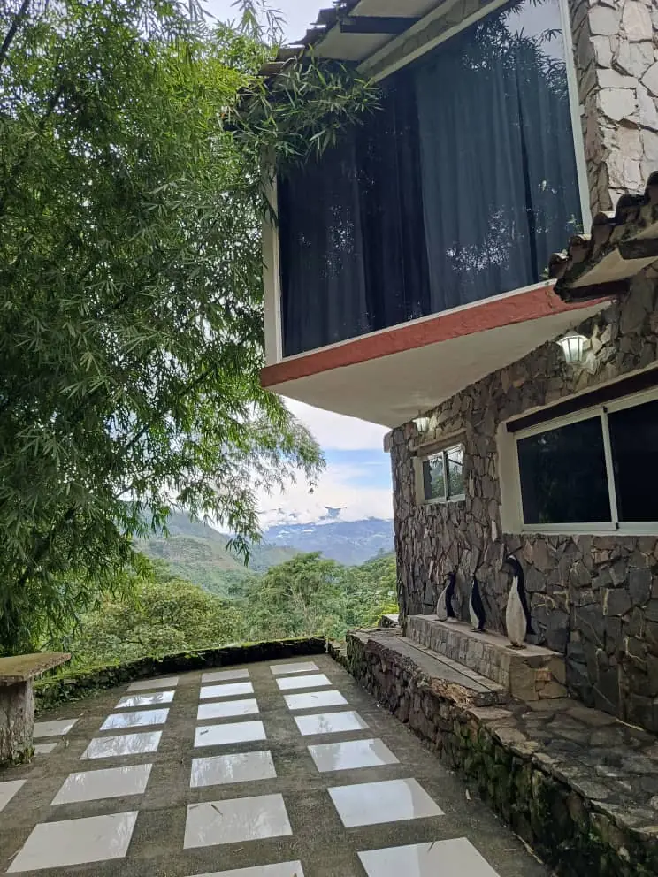

Aquí va:foto del río
El río
Agua que corre entre piedras y helechos, a pocos pasos del sendero.

Sanare, en la montaña
Río, cascada, senderos y jardines llenos de pájaros, con el clima fresco de la montaña.
La cascada
Un sendero entre el bosque baja hasta el río y la cascada. Es el paseo para hacer con calma, con zapatos cómodos, escuchando el agua desde antes de llegar.
Agua que corre entre piedras y helechos, a pocos pasos del sendero.
Caminos de piedra entre los jardines y senderos de bosque que bajan hacia el río.
Con tantas plantas y árboles, los pájaros están siempre cerca.
Por WhatsApp, con el día de llegada, el de salida y cuántas personas vienen.
La disponibilidad y la tarifa de la habitación o cabaña que prefiera.
La ubicación y las indicaciones del camino hasta la posada.